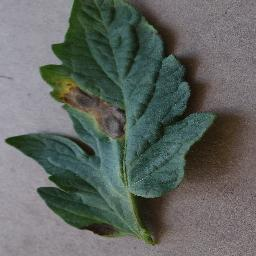
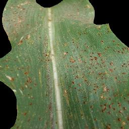
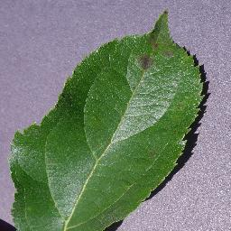
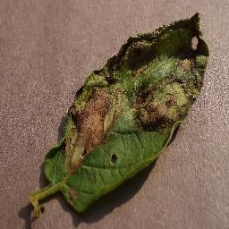

📸 Capture or Upload Leaf
Tap to take photo or drop leaf image
Supports smartphone cameras, JPEG, PNG, WebP
🧪 Or Try Benchmark Leaf Samples:

🍅 Tomato Blight
🌽 Corn Rust
🍏 Apple Scab
🥔 Potato Blight
🍏 Apple Healthy
🔬 Real-Time Diagnostic Engine
Predicted Pathology
—
Botanical Crop Family
—
Autonomous Saliency Gate
—
Background clutter suppressed
Helmholtz Free Energy
—
OOD Non-Plant Detection
🛡️ Split Conformal Safe Set (95% Safety Guarantee)
q̂ = 0.9822
Mathematically guaranteed prediction set that contains the true pathology with 95% statistical coverage.
No diagnosis yet.
Diagnostic Probability Distribution:
🌱 Agronomic Treatment Advisory:
Select or photograph a leaf to generate disease management recommendations.